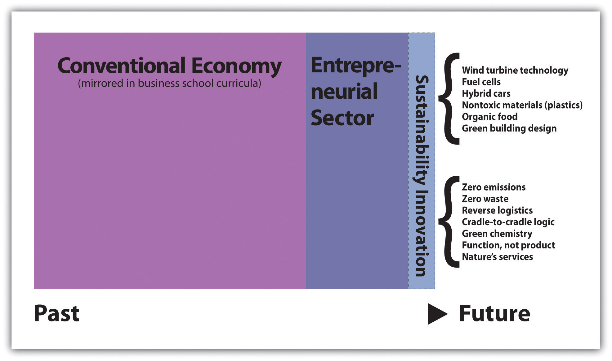
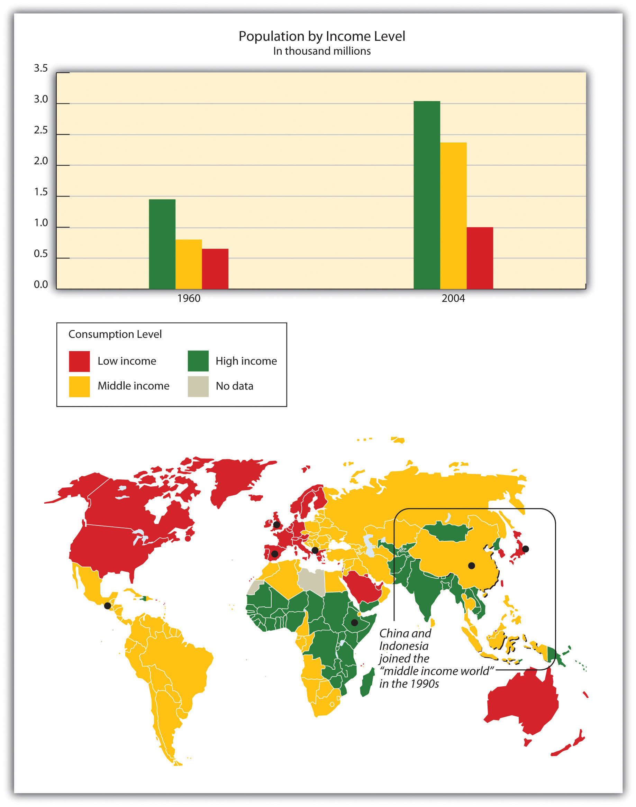

Recognition that the global economy is processing the world’s natural resources and generating waste streams at an unprecedented scale and scope calls for the redesign of commercial activity. Reconfiguring how we conduct business and implementing business practices that preserve the world’s natural resources for today’s communities and the economic, environmental, and social health and vitality of future generations only recently has become a priority. This notion lies at the heart of sustainability. Sustainability in the business sense is not about altruism and doing what is right for its own sake. Businesses with successful sustainability strategies are profitable because they integrate consideration of clean design and resource conservation throughout product life cycles and supply chains in ways that make economic sense. Sustainability innovation is about defining economic development as the creation of private and social wealth to ultimately eliminate harmful impacts on ecological systems, human health, and communities.
Awareness of the problem of pollution and resource limits has existed for decades but until now only in fragmented ways across informed academic and scientific subcommunities. Today it is becoming self-evident that our past patterns of energy and material use must be transformed. While some still question the seriousness of the challenges, governments and companies are responding. Government is imposing more environmental, health, and safety regulatory constraints on business. However, while regulation may be an important part of problem solving, it is not the answer. Fortunately, businesses are stepping up to the challenge. In fact, the inherent inefficiencies and blind spots that are built into the accepted business and growth models that have been debated and discussed for many years are beginning to be addressed by business. Entrepreneurial innovators are creating solutions that move us away from needing regulation. In addition, recently the critiques have moved from periphery to mainstream as it has become increasingly clear to the educated public that the economic practices that brought us to this point are not sufficient to carry us forward. Since governments alone cannot solve the problems, it will take the ingenuity of people across sectors to generate progress. Sustainability innovation offers a frame for thinking about how entrepreneurial individuals and firms can contribute.
The new models of business sustainability are emerging. They are based on current science, pressure from governments, and citizen demand and envision a world in which human economic development can continue to be sustained by natural systems while delivering improved living standards for more people. That is the goal; however, it takes concrete actions striving toward that ideal to make headway. Those entrepreneurs and ventures embodying the ideal of sustainability have found creative ways to achieve financial success by offering products that improve our natural environment and protect and preserve human health, equity, and community vitality. We will now explore this term, sustainability, and its significance in entrepreneurial thinking.
Sustainability innovationThe creative redesign of products and services that aligns business success with the viability of natural systems, human health, and thriving communities; can be applied to company strategy, supply-chain innovations, and design approaches that mobilize diverse collaborators to create breakthrough results. reflects the next generation of economic development thinking. It couples environmentalism’s protection of natural systems with the notion of business innovation while delivering essential goods and services that serve social goals of human health, equity, and environmental justice. It is the wave of innovation pushing society toward clean technology, the green economy, and clean commerce. It is the combined positive, pragmatic, and optimistic efforts of people around the world to refashion economic development into a process that addresses the fundamental challenges of poverty, environmental justice, and resource scarcity. At the organizational level, the term sustainability innovation applies to product/service and process design as well as company strategy.
Figure 2.8 The Movement toward Sustainability Innovation
Sustainability and sustainability innovation have been defined by different individuals representing diverse disciplines and institutions. Certain fundamentals lie at the concepts’ core, however, and we illuminate these fundamentals in the discussion that follows. Keep in mind that any given definition’s precision is less important than the vision and framework that guide actions in the direction of enduring healthy economic development. Later we will examine concepts and tools that are used to operationalize sustainability strategy and design. It is by combining existing definitions with an understanding of sustainability’s drivers and then studying how entrepreneurial innovators implement the concept that you gain the full appreciation for the change sustainability represents. Note that you will find the terms sustainability, sustainable business, and even sustainability innovation used loosely in the media and sometimes applied to activities that are only continued (“sustained”) as opposed to the meaning of sustainability we work with in this text. Our definition addresses the systemic endurance and smooth functioning of ecological systems and the preservation of carrying capacities, together with protection of human health, social justice, and vibrant communities. We are interested in entrepreneurial and innovative disruption that can accelerate progress along this path.
Paul E. Gray, a former president of the Massachusetts Institute of Technology (MIT), stated in 1989 that “furthering technological and economic development in a socially and environmentally responsible manner is not only feasible, it is the great challenge we face as engineers, as engineering institutions, and as a society.”Paul E. Gray, “The Paradox of Technological Development,” in Technology and Environment (Washington, DC: National Academy Press, 1989), 192–204. This was his expression of what it meant for MIT to pursue sustainability ideas.
A sustainable product or process is one that constrains resource consumption and waste generation to an acceptable level, makes a positive contribution to the satisfaction of human needs, and provides enduring economic value to the business enterprise.Bhavik R. Bakshi and Joseph Fiksel, “The Quest for Sustainability: Challenges for Process Systems. Engineering,” AIChE Journal 49, no. 6 (2003): 1350.
Pediatric cancer physician and researcher Karl-Henrik Robèrt, the founder of an educational foundation called The Natural Step that helps corporations and municipalities implement sustainability strategies, conveys sustainability this way: “Resource utilization should not deplete existing capital, that is, resources should not be used at a rate faster than the rate of replenishment, and waste generation should not exceed the carrying capacity of the surrounding ecosystem.”Karl-Heinrik Robert, The Natural Step: A Framework for Achieving Sustainability in Our Organizations (Cambridge, MA: Pegasus, 1997).
The Natural Step, a framework to guide decision making and an educational foundation with global reach based in Stockholm, Sweden, offers a scientific, consensus-based articulation of what it would mean for sustainability to be achieved by society and for humans to prosper and coexist compatibly with natural systems. Natural and man-made materials would not be extracted, distributed, and built up in the world at a rate exceeding the capacity of nature to absorb and regenerate those materials; habitat and ecological systems would be preserved; and actions that create poverty by undermining people’s capacity to meet fundamental human needs (for subsistence, protection, identity, or freedom) would not be pursued. These requisite system conditions acknowledge the physical realities of resource overuse and pollution as well as the inherent threat to social and political stability when human needs are systematically denied.
The search for sustainability can lead to innovation that yields cost savings, new designs, and competitive advantage. Like the quality gurus who called for zero defects, the early adopters of the sustainability perspective may seem extreme in calling for waste-free businesses in which the nonproduct outputs become inputs for other products or services. But sustainability’s zero-waste goal offers a critical, underlying insight: health, environmental, and community social issues offer opportunities for businesses.Andrea L. Larson, Elizabeth Olmsted Teisberg, and Richard R. Johnson, “Sustainable Business: Opportunity and Value Creation,” Interfaces: International Journal of the Institute for Operations Research and the Management Sciences 30, no. 3 (May/June 2000), 2.
Examining innovative leaders provides a window into the future through which we can see new possibilities for how goods and services can be delivered if sufficient human ingenuity is applied. The approach extends the premises of entrepreneurial innovation, a long-standing driver of social and economic change, to consider natural system viability and community health. Drawing on systems thinking, ecological and environmental health sciences, and the equitable availability of clean commerce economic development opportunities, sustainability innovation offers a fast-growing market space within which entrepreneurial leaders are offering solutions and paths forward to address some of society’s most critical challenges.
It is important to recognize sustainability’s cross-disciplinary approach. Sustainability in business is about designing strategies for value creation through innovation using an interdisciplinary lens. Specialization and grounding in established disciplines provide requisite know-how, but sustainability innovation requires the ability to bridge disciplines and to rise above the narrow bounds and myopia of specialized training in conventional economic models to envision new possibilities. Sustainability innovation occurs when entrepreneurs and ventures stretch toward a better future to offer distinctly new products, technologies, and ways of conducting business. The empirical evidence suggests that while entrepreneurs who succeed typically bring their uniquely specialized know-how to the table, they also have a systems view that welcomes and mixes diverse perspectives to create change.
Business has traveled a long distance from the adversarial pollution control days of the 1970s in the United States, when systemic ecological problems were first acknowledged. Companies were asked to bear the costs of environmental degradation yet often lacked the ability or know-how to realize any rewards for those investments. Decades ago, the goals were narrow: compliance and cost avoidance. Today the intersecting environmental, health, and social challenges are understood as more complex. Community prosperity requires a far broader view of economic development. It requires a sustainability mind-set. While the challenges are undeniably serious, as our examples will show, the entrepreneurial mind sees wide open opportunities.
A growing number of companies now recognize that improving performance and innovation across the full sustainability agenda—financial, ecological, environmental, and social health and prosperity—can grow revenues, improve profitability, and enhance their brands. Sustainability strategies and innovations also position businesses favorably in markets, as their slower-learning competitors fail to develop internal and supply-chain competencies to compete. We predict that within a relatively short period of time what is now considered sustainability innovation will become mainstream business operation.
Sidestepping the need for sustainability may prove difficult. Population growth rates and related higher levels of waste guarantee environmental concerns will grow in importance. The government and the public are increasingly concerned with the extent and severity of air, water, and soil contamination and the implications of natural resource consumption and pollution for food production, drinking water availability, and public health. As environmental and social problems increase, public health concerns are likely to drive new approaches to pollution prevention and new regulations encompassing previously unregulated activities. As concerns increase, so will the market power of sustainable business. The opportunities are there for the entrepreneurially minded. Sustainability innovation offers solutions.
The entrepreneurial leaders forging ahead with sustainability innovation understand the value of partnerships with supply-chain vendors and customers, nongovernmental organizations (NGOs), public policy agencies, and academia in pursuing product designs and strategies. Many of their innovations are designed to avoid the need for regulation by steadily reducing adverse ecological and health impacts, with the goal of eliminating negative impacts altogether. Significantly, environmental and associated health, community, and equity issues are integrated into core business strategy and thus into the operations of the firm and its supply chains.
Start-up firms and small to midsized companies have always been major movers of entrepreneurial innovation and will continue to lead in sustainability innovation. However, even large firms can offer innovative examples. Indeed, Stuart Hart in his 2005 book Capitalism at the Crossroads: The Unlimited Business Opportunities in Solving the World’s Most Difficult Problems argues that multinational corporations have the capacity and qualities to address the complicated problems of resource constraints, poverty, and growth.Stuart L. Hart, Capitalism at the Crossroads (Upper Saddle River, NJ: Wharton School Publishing, 2005). According to analysts of what is termed “bottom of the pyramid” markets where over two billion people live on one to two dollars a day, developing countries represent both a market for goods and the potential to introduce sustainable practices and products on a massive scale.
Figure 2.9 Growing Wealth but Growing Inequality
Source: UNEP/GRID-Arendal, “Population by Income Level,” GRID-Arendal Maps and Graphics Library, accessed March 14, 2011, http://maps.grida.no/go/graphic/population-by-income-level.
By the first decade of the twenty-first century, a growing number of business executives believed that sustainability should play a role in their work. PricewaterhouseCoopers found that in 2003, 70 percent of CEOs surveyed believed that environmental sustainability was important to overall profit. By 2005, that number had climbed to 87 percent.Karen Krebsbach, “The Green Revolution: Are Banks Sacrificing Profits for Activists’ Principles?” US Banker, December 1, 2005, accessed March 27, 2009, http://www.accessmylibrary.com/coms2/summary_0286-12108489_ITM. In a later PricewaterhouseCoopers survey of technology executives, 71 percent said they did not believe their company was particularly harmful to the environment, yet 61 percent said it was nonetheless important that they reduce their company’s environmental impact. The majority of executives also believed strong demand existed for “green” and cleaner products and that demand would only increase.PricewaterhouseCoopers, “Going Green: Sustainable Growth Strategies,” Technology Executive Connections 5 (February 2008), accessed March 27, 2009, http://www.pwc.com/images/techconnect/TEC5.pdf.
Such employers as well as employees have begun striving toward sustainability. Labor unions and environmentalists, once at odds, jointly created the Apollo Alliance to promote the transition to a clean energy environment under the slogan “Clean Energy, Good Jobs.” Van Jones, formerly with the Obama administration, led Green For All, an organization that proposed the new green economy tackle poverty and pollution at the same time through business collaboration in cities to provide clean energy jobs.
Meanwhile, numerous large and well-known companies, including DuPont, 3M, General Electric, Walmart, and FedEx, have taken steps to save money by using less energy and material or to increase market share by producing more environmental products. Walmart, for instance, stated that as of 2009 its “environmental goals are simple and straightforward: to be supplied 100 percent by renewable energy; to create zero waste; and to sell products that sustain our natural resources and the environment.”Walmart, “Sustainability,” accessed March 27, 2009, http://walmartstores.com/Sustainability. But transitioning from a wasteful economic system to one that conserves energy and materials and dramatically reduces hazardous waste, ultimately reversing the ecological degradation and social inequity often associated with economic growth, takes a major shift in the collective state of mind.
Assumptions that Earth systems, regional and local ecological systems, and even the human body can be sustained and can regenerate in the face of negative impacts from energy and material consumption have proven wrong. Linear processes of extracting or synthetically producing raw materials, converting them into products, using those products, and throwing them away to landfills and incinerators increasingly are viewed as antiquated, old-world designs that must be replaced by systems thinking and life-cycle analysis. These new models will explicitly consider poverty alleviation, equity, health, ecological restoration, and smart energy and materials management as integrated considerations. The precise outline of the new approach remains ambiguous, but the direction and trajectory are clear. While government policies may contribute guidelines and requirements for a more sustainable economic infrastructure, the business community is the most powerful driver of rapid innovation and change. The entrepreneurs are leading the way.
In conclusion, economic development trajectories both in the United States and worldwide are now recognized as incompatible with ecological systems’ viability and long-term human health and social stability. Wetlands, coastal zones, are rain forests are deteriorating, while toxins and air and water pollution harm human health and drive political unrest and social instability; witness the growing numbers of environmental refugees. Even large Earth systems, such as the atmosphere and nitrogen and carbon cycles, are endangered. The business models we created in the nineteenth and twentieth centuries that succeeded in delivering prosperity to ever greater numbers of people did not anticipate the exponential population explosion, technological capability to extract and process ever-greater volumes of materials, natural resource demand, growing constraints on resources, political unrest, fuel cost volatility, and limits of ecological systems and human bodies to assimilate industrial waste.
Scholars and students of business will look back on the early decades of the twenty-first century as a transition as the human community responded to scientific feedback from natural systems and took to heart the desire to extend true prosperity to greater numbers by redesigning business. To the extent that this effort will be deemed successful, much of the credit will go to the entrepreneurial efforts to experiment with new ideas and to drive the desired change. No single venture or individual can address the wide range of sustainability concerns. It is the combination of large and small efforts across sectors and industries around the world that will create an alternative future. That is how change happens—and entrepreneurs are at the cutting edge.